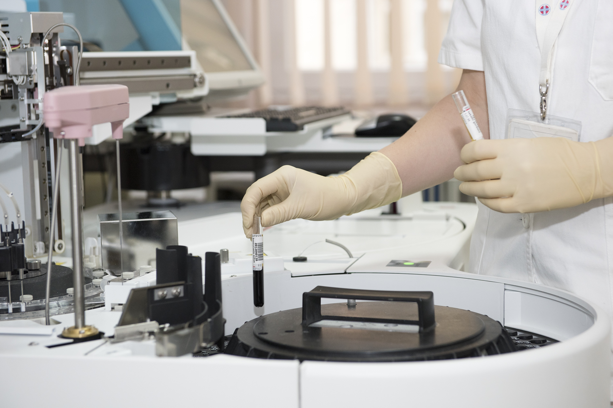

Labs
Projects

We were very excited that our Bant app was nominated in the list of Top 10 World Congress mHealth Innovation Entrepreneurs. Being awarded the People’s Choice Award at the event in the face of such innovative and cutting-edge competition was an unexpected surprise which has left us thrilled and motivated to continue our efforts towards impactful mHealth research.
The Centre’s Rachel White and Dr. Tony Easty were the recipients of a standing ovation and this prestigious award after giving their presentation on Improving the Safety of Ambulatory IV Chemotherapy in Canada at the Edmonton Conference last year. The submitted abstract and presentation had tremendous impact on the nursing community present at the Canadian Association of Nurses in Oncology.
The UHN Telehealth Program was awarded significant contribution to Telehealth in Canada. This prestigious award was received by Dr. Peter Rossos and Dr. Joseph Cafazzo, on behalf of the Telehealth Program and the Personal Health Information Technology Group, at the 6th Annual COACH Award Gala. The Program’s many successes include serving as the pilot site for Ontario Telemedicine Network projects, including desktop videoconferencing and personal telemedicine pilots.
Nathaniel Hamming was awarded the overall Best Scientific Paper at the 34th Annual Canadian Medical & Biological Engineering Society Conference. His submission was entitled: Automatic Image-to-World Registration Based on X-Ray Projections in Cone-Beam CT, authored by Nathaniel Hamming, Michael Daly, Jeffrey Siewrdsen and Jonathan Irish. This year’s conference event was held as part of the Festival of International Conferences on Caregiving, Disability, Aging and Technology (FICCDAT). The Academic Program boasted great sessions on the latest biomedical engineering research.
Dr. Jackie Bender was awarded the International Medical Informatics Association (IMIA) best research-based paper, from a younger scientist. Presented to her by Dr. Chris Paton, from the University of Auckland, her award-winning paper is entitled: “What Is the Role of Online Support for the Supporters? A Multi-Method Study Examining the Use of Online Communities among Breast Cancer Peer Support Providers”.
Mark Casselman was awarded for his demo-presentation of bant: A Mobile Phone-Based Self Management System for Adolescents with Type I Diabetes at the 2011 Stanford Med 2.0 Congress. This Best Demo Presentation award was presented to Mark by Dr. Larry Chu, Chair of the Stanford Med 2.0 Organizing Committee.
The most sophisticated laboratories of their kind allow our team to evaluate, iterate, and improve. Part of the University Health Network, and adjacent to the University of Toronto, the Centre provides unrivaled access to subjects, facilities, and professionals.
To request a tour, or to get informed about booking our lab space, please email us at info@ehealthinnovation.org
The simulation labs provide theatre-style spaces that can be configured to meet your particular needs. They work independently, or can be combined to offer a total of 2000 square feet of space. These labs are particularly useful for analyzing complex interactions between related environments.
These rooms are equipped with touch screen control panels so that you can easily manage the technology; including pan-tilt- zoom cameras, audio recordings, and screen captures. Testing sessions are discretely directed and monitored from the observation rooms thanks to the one-way mirrors and integrated communication system.
Use this technologically sophisticated space to engage in activities ranging from secure consultations to open interactions with the general public. This room is ideal for meetings or small focus groups that need to be recorded for further study. The teleconference room can also function as another fully-equipped simulation & usability lab.
Our labs allow for high-fidelity simulations of clinical environments and scenarios, and are equipped with sophisticated recording equipment for archiving, analyzing and sharing data. The usability labs can simulate health-related settings, allowing rigorous testing and rapid improvement of medical devices before they are introduced into real environments.